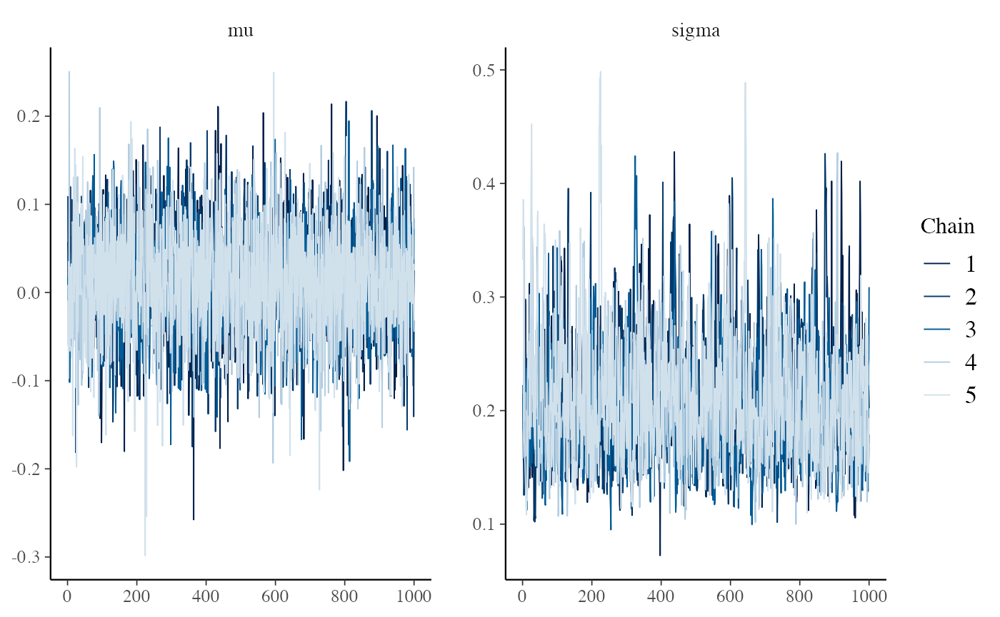
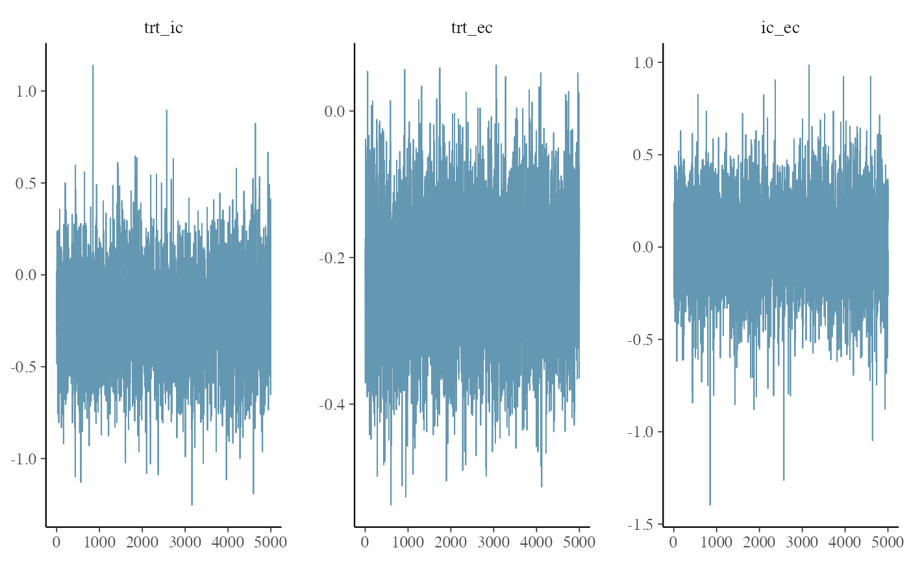

Purpose
This vignette describes how to use the R package to estimate treatment effects for a new single-arm study with an external control arm. See vignette("methodology") for details on the methodology.
Note that you will need to install JAGS as well as the rjags package (see the home page). We will also use bayesplot and ggplot2 to visualize our Bayesian models.
Example reference studies
We start by simulating an example set of 15 reference studies with no bias (\(\mu = 0\)) and between study variability based on hazard ratios (HRs) uniformly distributed between 0.7 and 1.3. Standard errors of the log HRs are set based on the number of events in each arm (internal control and external control) ranging uniformly between 100 and 800.
# Simulated example data
N <- 15
mu <- 0 # True bias
sigma <- .16 # True between study variability
n_events_ec <- runif(N, 100, 800)
n_events_ic <- runif(N, 100, 800)
loghr_ic_ec_var <- 1/n_events_ic + 1/n_events_ec
loghr_ic_ec_est <- rnorm(n = N, mean = mu, sd = sqrt(sigma^2 + loghr_ic_ec_var))
paste0("Observed bias: ", round(mean(loghr_ic_ec_est), 2))## [1] "Observed bias: 0.02"## [1] "Observed variability: 0.21"Model estimation using reference studies
We estimate \(\mu\) and \(\sigma\) with ecmeta(), using JAGS to perform Markov Chain Monte Carlo (MCMC) sampling. We run 5 chains to help assess convergence. The thinning intervals and number of burn-in iterations can be controlled, but the model converges very quickly so we use every draw (i.e., thin = 1 and n_burnin = 0). A uniform, Student t, or inverse gamma distribution can be used for the dispersion parameter (\(\sigma\) with the uniform and Student t priors; \(\sigma^2\) with an inverse gamma prior); we use a half-Cauchy distribution here, which is a Student t distribution with 1 degree of freedom.
loghr_ic_ec <- loghr_data(loghr_ic_ec_est, sqrt(loghr_ic_ec_var))
loghr_ecmeta <- ecmeta(
loghr_ic_ec,
n_iter = 1000,
n_chains = 5, n_burnin = 0, thin = 1,
quiet = TRUE,
prior_mu = normal(0, 100),
prior_scale = student_t(0, 10, 1) # half-Cauchy
)
loghr_ecmeta## Iterations = 1001:2000
## Thinning interval = 1
## Number of chains = 5
## Sample size per chain = 1000
##
## param mean se_naive se_ts sd 2.5% 25%
## 1 mu 0.01004968 0.0008079500 0.000965979 0.05713069 -0.1052837 -0.0266317
## 2 sigma 0.20524271 0.0006998475 0.001291800 0.04948669 0.1264375 0.1702841
## 50% 75% 97.5% rhat
## 1 0.01027317 0.04764843 0.1248047 1.000439
## 2 0.19934674 0.23272684 0.3199668 1.005193The default print method summarizes the posterior distributions of the parameters.
loghr_ecmeta## Iterations = 1001:2000
## Thinning interval = 1
## Number of chains = 5
## Sample size per chain = 1000
##
## param mean se_naive se_ts sd 2.5% 25%
## 1 mu 0.01004968 0.0008079500 0.000965979 0.05713069 -0.1052837 -0.0266317
## 2 sigma 0.20524271 0.0006998475 0.001291800 0.04948669 0.1264375 0.1702841
## 50% 75% 97.5% rhat
## 1 0.01027317 0.04764843 0.1248047 1.000439
## 2 0.19934674 0.23272684 0.3199668 1.005193Diagnostics
Its a good idea to assess the model to ensure it converged. We could see from the summaries above that the R-hats were very close to 1, which suggests that the chains were converging.
We also recommend using the bayesplot package to produce diagnostic plots (note, however, that in order to keep the package light we don’t import bayesplot, so you will need to install it yourself). Objects returned by ecmeta() have as.array() methods so that they can be passed to any bayesplot function that accepts an object with an as.array() method (e.g., bayesplot::mcmc_trace()). The trace plot suggests that the chain mixed well and that there were no issues with convergence.
mcmc_trace(loghr_ecmeta)
We can also plot the draws from the posterior distribution of \(\mu\) and \(\sigma\).
mcmc_hist(loghr_ecmeta, binwidth = .0005)
Model prediction for new study
We now consider a new study in which the estimated HR was 0.8 and there were 250 events in the treatment arm and 300 events in the control arm. We can therefore approximate the variance of the log HR as 1/250 + 1/300 (although in a real application with propensity score methods the standard error would likely be estimated via bootstrapping or from a closed form approximation).
new_loghr_trt_ec <- loghr_data(
estimate = log(.8),
standard_error = sqrt(1/250 + 1/300)
)Predictions of the true log HR for a hypothetical scenario in which an internal control arm existed are predicted using (i) the estimated log HR above, \(\hat{\lambda}_{TRTvEC} = 0.8\) and (ii) the model for \(\hat{\lambda}_{ICvEC}\) fit above with ecmeta() using the reference studies.
Specifically, we first use MCMC to draw samples from \(\lambda_{TRTvEC}\) where \(\hat{\lambda}\) is an estimate of a log HR and \(\lambda\) is the true underlying parameter (see vignette("methodology") for an explanation of the distinction between true and estimated HRs). These draws are then combined with the draws of \(mu\) and \(\sigma\) to (i) draw samples from the posterior predictive distribution of \(\lambda_{ICvEC}\) and (ii) then, to compute, \(\lambda_{TRTvIC} = \lambda_{TRTvEC} - \lambda_{ICvEC}\). The quantity \(\lambda_{TRTvIC}\) effectively adjusts the distribution of \(\lambda_{TRTvEC}\) for the bias and between study variability estimated from the reference studies.
loghr_new <- predict(
loghr_ecmeta,
newdata = new_loghr_trt_ec,
quiet = TRUE
)
loghr_new## Posterior sampling was performed for the true log HR of the treatment
## relative to the external control ('loghr_trt_ec') with the following settings:
##
## Iterations = 1:1000
## Thinning interval = 1
## Number of chains = 5
## Sample size per chain = 1000
##
## The estimates of 'mu' and 'sigma' were used to draw the true log HR of the
## internal control relative to the external control ('loghr_ic_ec'), which was
## in turn, used to adjust 'log_trt_ec' to obtain the predicted log HR
## for the treatment relative to a hypothetical internal control ('loghr_trt_ic').
##
## Summaries of the posterior distributions are displayed below:
## param mean se_naive sd 2.5% 25%
## 1 loghr_trt_ic -0.23758006 0.003343845 0.23644552 -0.7164481 -0.3861098
## 2 loghr_trt_ec -0.22614351 0.001219911 0.08626074 -0.3905472 -0.2857715
## 3 loghr_ic_ec 0.01143655 0.003102722 0.21939557 -0.4267720 -0.1273988
## 50% 75% 97.5% rhat
## 1 -0.238199984 -0.08314489 0.23571650 NA
## 2 -0.226472638 -0.16678924 -0.05761753 1.001748
## 3 0.005975668 0.14775068 0.45449840 NADiagnostics
Similar to above, we inspect the trace of \(\lambda_{TRTvEC}\) and detect no issues.
mcmc_trace(loghr_new)
Hazard ratios
Thesummary() method for the prediction object can exponentiate the log HRs to produce posterior summaries of the HRs. The observed bias in our reference studies was small (\(\mu\) close to 0), so the means of \(\lambda_{TRTvIC}\) and \(\lambda_{TRTvEC}\) are very similar as well. However, \(\lambda_{TRTvIC}\) has a considerably wider distribution due to the assumed between study variability.
summary(loghr_new, exponentiate = TRUE)## param mean se_naive sd 2.5% 25% 50%
## 1 hr_trt_ic 0.8109941 0.002798689 0.19789720 0.4884842 0.6796959 0.7880451
## 2 hr_trt_ec 0.8005806 0.000980652 0.06934257 0.6766865 0.7514343 0.7973412
## 3 hr_ic_ec 1.0362460 0.003302685 0.23353512 0.6526124 0.8803825 1.0059936
## 75% 97.5% rhat
## 1 0.9202178 1.2658154 NA
## 2 0.8463780 0.9440109 1.001748
## 3 1.1592238 1.5753831 NAQuicker simulations
In some cases (e.g., when running simulations) it might be useful to simulate predictions for the new study very quickly. In this case, we can use a maximum likelihood based approach instead of the Bayesian approach described above.
loghr_ecmeta_ml <- ecmeta(loghr_ic_ec, method = "ml")
loghr_ecmeta_ml## Parameters:
## param estimate se 2.5% 97.5%
## 1 mu 0.01207288 0.05049343 -0.08689243 0.1110382
## 2 sigma 0.17843211 0.03999656 0.11499300 0.2768692The results are similar to those from the Bayesian approach, although the estimates of \(\sigma\) are smaller using maximum likelihood, a discrepancy that becomes increasingly small as the number of reference studies increases.
loghr_new_ml <- predict(loghr_ecmeta_ml, newdata = new_loghr_trt_ec)
summary(loghr_new, exponentiate = TRUE)## param mean se_naive sd 2.5% 25% 50%
## 1 hr_trt_ic 0.8109941 0.002798689 0.19789720 0.4884842 0.6796959 0.7880451
## 2 hr_trt_ec 0.8005806 0.000980652 0.06934257 0.6766865 0.7514343 0.7973412
## 3 hr_ic_ec 1.0362460 0.003302685 0.23353512 0.6526124 0.8803825 1.0059936
## 75% 97.5% rhat
## 1 0.9202178 1.2658154 NA
## 2 0.8463780 0.9440109 1.001748
## 3 1.1592238 1.5753831 NA
summary(loghr_new_ml, exponentiate = TRUE)## param mean se_naive sd 2.5% 25% 50%
## 1 hr_trt_ic 0.8130503 0.005437369 0.17194471 0.5320176 0.6942279 0.7943682
## 2 hr_trt_ec 0.8026759 0.002162067 0.06837055 0.6820539 0.7522157 0.7994061
## 3 hr_ic_ec 1.0234666 0.006258237 0.19790285 0.7029402 0.8850287 1.0048856
## 75% 97.5%
## 1 0.9087986 1.1781100
## 2 0.8463504 0.9479453
## 3 1.1408093 1.4759664